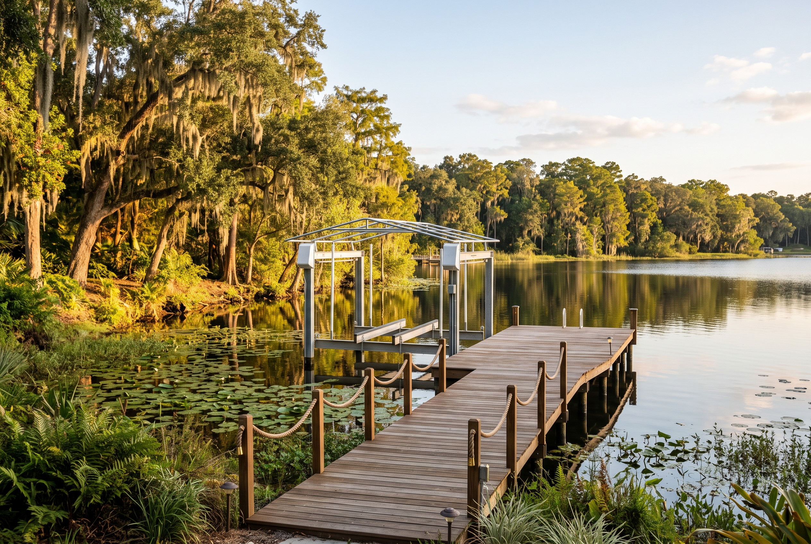
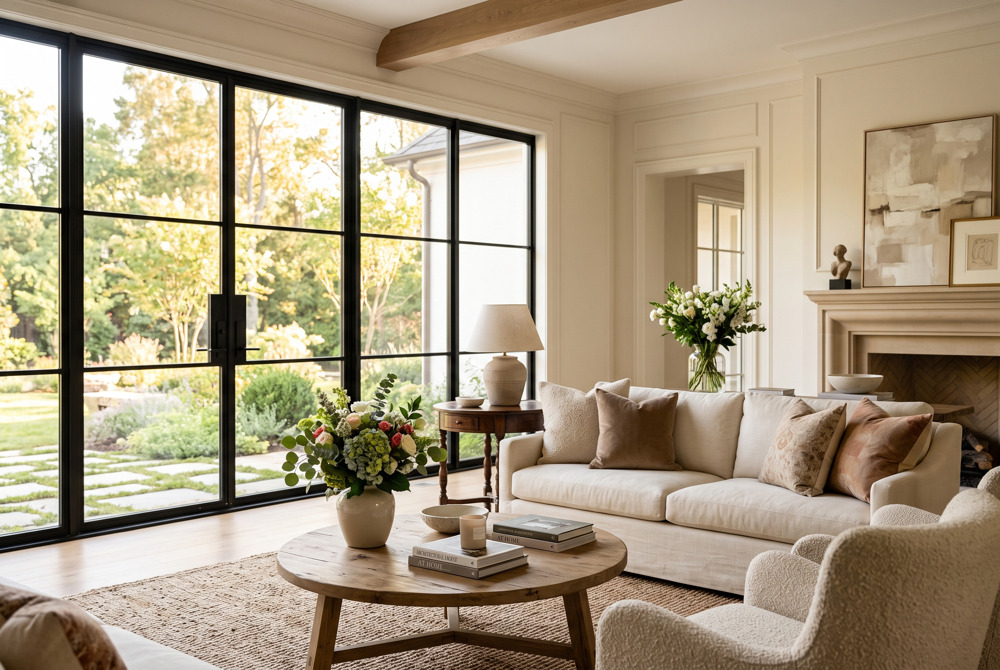
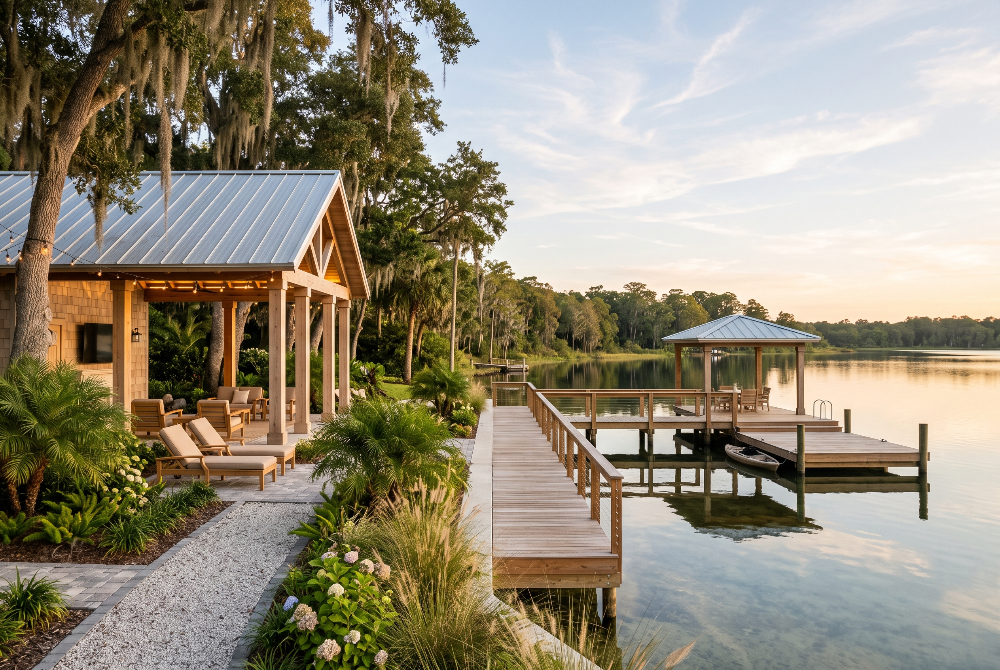

Windermere
Southwest Orange County, built around the Butler Chain of Lakes — the incorporated town holds about 3,000 people; most of what buyers call Windermere lies outside its actual boundary.

Orientation
Windermere sits in southwest Orange County, wrapped by the Butler Chain of Lakes — nine connected, spring-fed lakes running from Lake Down and Lake Butler through Lake Tibet and Lake Sheen down to Pocket Lake and Fish Lake, linked by canals. The incorporated town itself occupies the isthmus where the east and west sides of the chain meet. Most of the homes people mean when they say “Windermere” sit outside that town line, in the unincorporated area that carries the same name and zip code.
Character
The town was platted in 1887 by John Dawe, an English settler who named it for Windermere, a lake in England’s Lake District, and incorporated in 1925. It has about 3,030 residents as of the 2020 census, some streets left unpaved by the town’s own choice to hold on to that lake-district character, and it has been named a Tree City USA ten years running.
Everything outside that town line still gets called Windermere for real-estate purposes, and it’s a lot more ground: gated lakefront estate communities like Isleworth, which stayed unincorporated after a contested 2007 annexation vote, and newer development spreading toward Horizon West. Butler Bay, a neighboring subdivision, annexed into the town in that same vote. Day-to-day shopping and dining for most of that wider area routes through Hamlin Town Center and Winter Garden Village — both technically in Horizon West and Winter Garden, not inside Windermere at all.

Schools
Windermere falls within Orange County Public Schools. School zoning in this part of the county has changed several times in the last decade as Horizon West grows, so which school a specific address feeds into depends on when that neighborhood was zoned. Windermere High School opened in August 2017, in the unincorporated Lake Butler area southwest of the historic town, not inside it. Bridgewater Middle School opened in 2007 in Winter Garden and has since had two newer middle schools, Horizon West Middle (2019) and Water Spring Middle (2021), built partly to relieve its enrollment. Bay Lake Elementary opened in 2016.
Zone lines shift as Horizon West keeps growing — worth checking a specific address against OCPS’s own zoning tool before assuming, not after.

Fit
Windermere suits someone who wants real, usable lake access — not a retention-pond view — and is willing to pay an HOA or a gated-community premium for it, along with a close look at whichever entity actually maintains the street a house sits on. It doesn’t suit someone who wants new-construction pricing like Lake Nona’s, or new construction inside the historic town at all — that ground has been built out for decades. Anyone chasing supply and choice does better in the unincorporated area outside the town line, where most of the Windermere-named inventory actually sits.
Before you buy here
An HOA comes with nearly anything built in the last twenty years carrying the Windermere name, and older streets inside the actual town can carry deed restrictions of their own — read them before a contract, not after. If lake access is part of the appeal, confirm what “access” means for a specific address: a private dock is not the same right as a shared or deeded easement onto the water, and the difference shows up in the property’s value and in what can be built at the shoreline.
Market snapshot
- Median sale price
- $1,199,399
- Median days on market
- 25 days
- Year over year, price
- +6.1%
As of September 2026. Source: Redfin, trailing 3 months.
Read this carefully
These figures come from one fixed source, checked each quarter, not averaged across providers. For Windermere specifically, that boundary question matters more than usual: one public source’s “Windermere” means the roughly 3,000-person incorporated town, another’s means the entire 34786 zip code, and a third might mean only that month’s active listings. That’s disclosed here, not smoothed over.
Market context only. Not an appraisal, and not a guarantee of price, timeline, or outcome for any specific home.

Considering Windermere
We’ll tell you whether it fits.
Call, or send a note, and we’ll tell you whether Windermere actually fits what you’re looking for — not just whether something’s available.
Direct line